How to sign PDF documents with the qualified electronic certificate on your smart card or USB token.
The Serbian text is the original. Where the two disagree, Uputstvo.html is the one that is right.
Liro Bridge is a small program that sits on your own computer. The document you sign goes nowhere — not to the internet, not to us. The private key never leaves the card, and no signature is ever made without you clicking a button.
Liro Bridge does not talk to your card directly. That is done by middleware — the program that came with your certificate. If it is not installed, Windows cannot see the card, so neither can Liro Bridge.
| Certificate issuer | What must already be installed |
|---|---|
| MUP (Serbian ID card with a chip) | a card reader + TrustEdgeID (NetSeT) |
| Pošta Srbije | a card reader + TrustEdgeID (NetSeT) |
| Halcom | a reader or USB token + Nexus Personal |
Beyond that you need 64-bit Windows 10 or 11.
How to check that Windows sees your card. Insert the card, open Device Manager and look under Smart card readers. If the reader is listed with no yellow mark beside it, the hardware is fine. If Liro Bridge still finds no certificate, the middleware from the table above is what is most likely missing.
The program installs into your own user profile, at %LOCALAPPDATA%\Programs\Liro Bridge, and the Start menu gets Liro Bridge and Liro Bridge — uputstvo (this guide).
There is also a file ending in -per-machine.msi. That one installs for every user of the computer, does need administrator rights, and exists for administrators deploying it through Group Policy. If you are installing for yourself, you do not want it.
The first time you run it, Windows shows a warning. This is expected and is not a sign that anything is wrong.
The reason is simple: for Windows to recognise a program as known, its publisher has to buy a code-signing certificate. Liro Bridge does not have one yet. Until it does, everybody sees a warning the first time they run it.
The warning appears in whatever language your Windows is in, not the language of this program. The pictures below are from an English Windows, so if yours is in Serbian the words on screen will not be the words in the pictures. Every button is named in words here for that reason — read the button, do not go by where it sits in the picture.
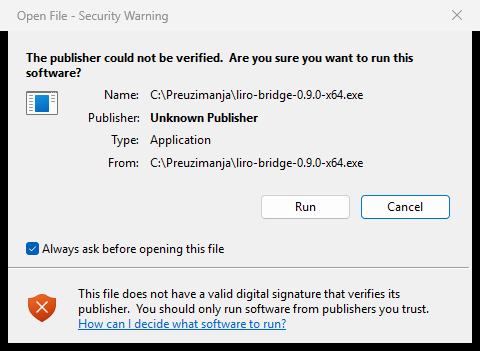
The Publisher line reads Unknown Publisher. That is accurate, and it is the line that should make you stop and check where the file came from — until programs are signed, Windows has nothing else it can put there.
Click Run. Cancel stops.
If you downloaded the file with a browser, Windows shows a blue full-window warning headed “Windows protected your PC” instead.
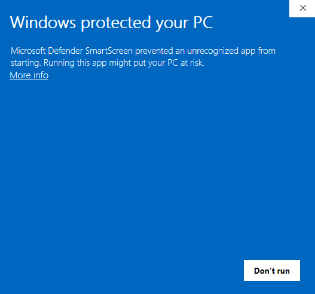
This is where most people give up, because it looks as though there is no choice. There is one, but it is hidden:
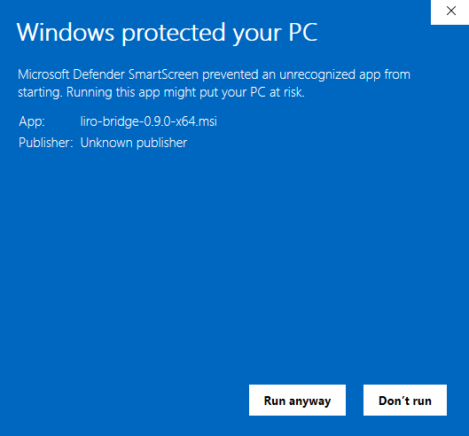
It says Unknown publisher. It will say that for you too, and it is accurate.
Windows puts the name from the certificate the file was signed with on that line. Liro Bridge has no such certificate — the reason is at the top of this section — so Windows has no name to put there and says the publisher is unknown. It is not telling you the file has been altered or tampered with; Windows is making no claim about that in either direction. It means only that the question “who made this?” cannot be answered from the file itself.
Since that line cannot tell you whether the file is ours, check it yourself — it takes half a minute. The releases page lists a SHA-256 digest for every file, and section 4 shows how to compute one and compare it. If they match, the file is byte for byte the one we published, which is a stronger check than a publisher's name.
The App line shows the name of the file you downloaded, with its version in the name. The picture shows liro-bridge-0.9.0-x64.msi; yours will name the version you downloaded.
The warning does not come back for that version of the program.
Before you click “Run anyway”, check where the file came from. This warning exists for a reason and is not one to click through out of habit. Only click it if you downloaded the file from the official releases page yourself. If somebody sent you an installer by email or chat, do not run it — go and download it yourself.
Some antivirus products flag Liro Bridge as suspicious. This is a false positive, and it has a recognisable cause: the program is not signed by a publisher certificate (see section 3), it talks to a smart card reader, and it opens a local port on your machine. Some malware has that same set of traits, so automated scanners sometimes confuse the two.
What to do:
Get-FileHash -Algorithm SHA256 path\to\file.msi
If you do not know how to add an exception and you need the program today, ask whoever looks after the computers where you work. Do not turn the antivirus off.
Put the card in the reader and start Liro Bridge from the Start menu.
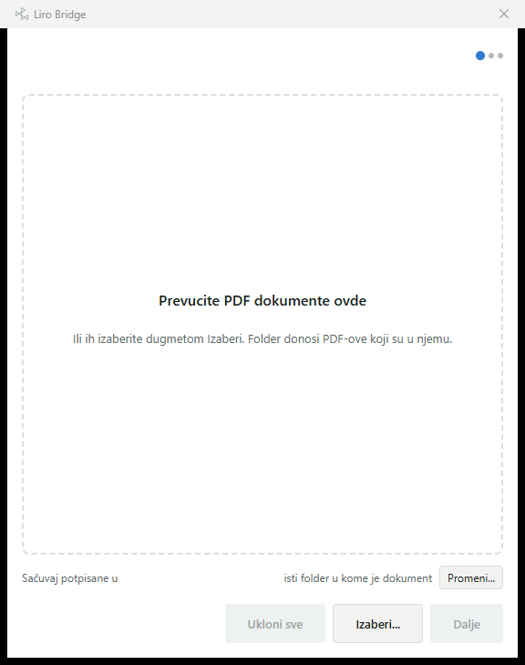
Drag PDF documents onto the area, or click Izaberi… (Browse) and find them. You can drag a whole folder — the program takes the PDFs inside it.
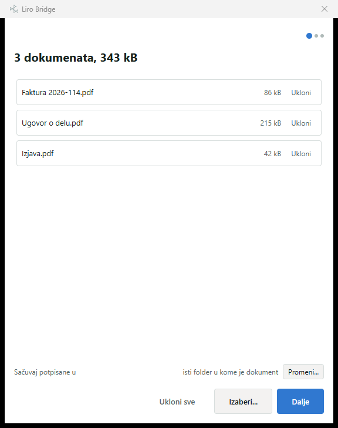
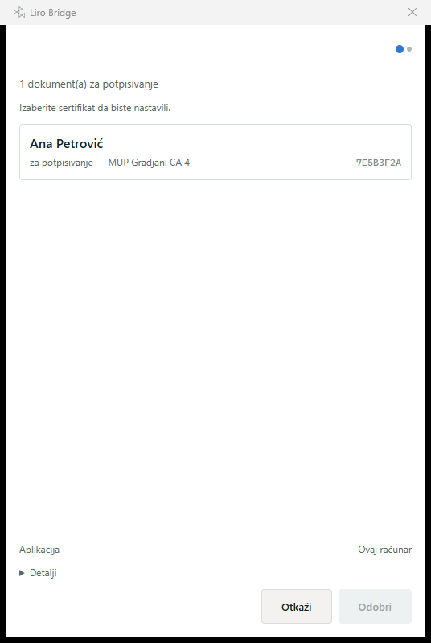
Odobri stays disabled until you have chosen a certificate. That is deliberate: a signature is only ever made after a choice you made on purpose.
If you want to see exactly what is being signed, open Detalji (Details) — it lists every document name and a fingerprint of the whole batch.
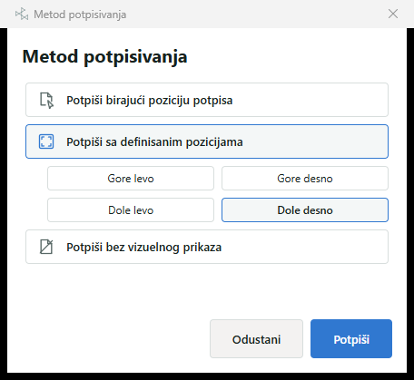
| Potpiši birajući poziciju potpisa Sign, choosing where it goes |
A page of the document opens and you drag the stamp where it belongs. The position is remembered for next time. |
| Potpiši sa definisanim pozicijama Sign in a fixed corner |
The stamp goes in the corner you pick, on every document. |
| Potpiši bez vizuelnog prikaza Sign with no visible mark |
Nothing is drawn on the page. The signature is still completely valid and every PDF reader can see it — you just cannot. |
After you click Potpiši, Windows asks for your card's PIN. That window is Windows's own, not ours — Liro Bridge never sees or stores your PIN.
Three wrong PINs block the card. If you are not sure, stop and check rather than guessing. Unblocking needs the PUK, and for a national ID card, a visit to a MUP counter.
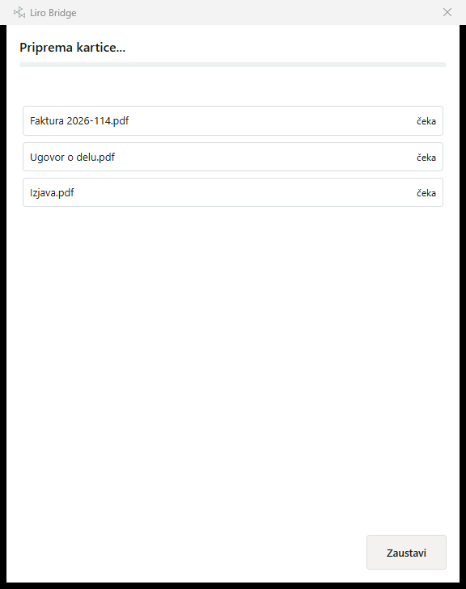
If one document fails, the program skips it and carries on. You will not have to enter your PIN again because of one bad file.
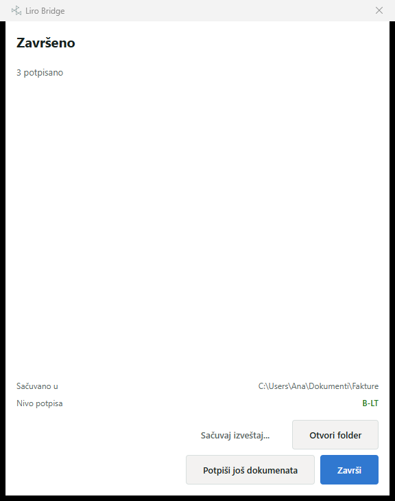
The signature level at the bottom says how well the signature will hold up over time:
By default the signed document is saved next to the original, with -signed added to the name: Faktura 2026-114.pdf becomes Faktura 2026-114-signed.pdf.
The original is never changed and never deleted.
If you would rather have them all in one place, click Promeni… (Change) beside Sačuvaj potpisane u on the first screen and pick a folder. Pored svakog dokumenta puts it back to the default.
If a file with that name already exists, the program asks what to do and offers to save as …-2.pdf. Nothing is overwritten without your answer.
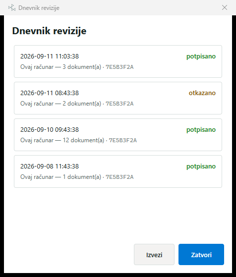
The log records every batch you signed or refused: when, how many documents, with which certificate, and how it ended.
What it is for: if somebody asks you in six months whether and when you signed something, this is the answer. Entries are chained together by cryptographic digests, so none of them can be altered or removed afterwards without it showing.
The log never leaves your computer. There is no way in the program to send it to anybody. It lives in %LOCALAPPDATA%\Liro\audit, and Izvezi (Export) writes a copy to a folder you choose, together with a report on its integrity.
The log contains no document names, personal names, national ID numbers or document contents. The certificate is recorded by its digest, not by its holder's name.
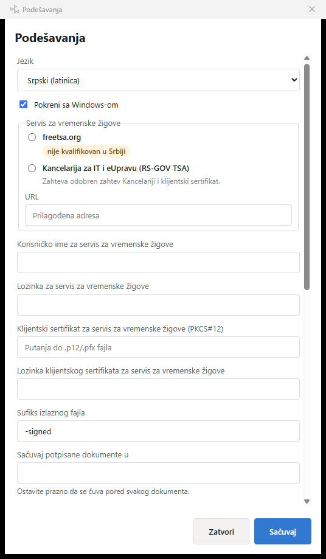
What you are most likely to change:
| Jezik — Language | Serbian (Latin), Serbian (Cyrillic) or English. |
| Pokreni uz Windows — Start with Windows | ready as soon as you sign in. |
| Izdavalac vremenskog žiga — Timestamp authority | without one, signatures stay at B-B. Some authorities need a contract and a client certificate. |
| Nivo potpisa — Signature level | B-LT is the default and the recommended one. |
| Nastavak imena — Name suffix | -signed unless you change it. |
The usual cause is a missing WebView2 — the component Liro Bridge uses to draw its windows. Windows 11 has it built in; some Windows 10 machines, especially ones kept off the internet by company policy, do not.
The program tells you so in a message. The fix is to install the Microsoft Edge WebView2 Runtime, which is free and comes from Microsoft. If you are not allowed to install software, this one is for whoever looks after the computers.
The reader is not plugged in, or Windows cannot see it. Unplug it, try another USB port, and check Device Manager (section 1).
The reader is there and the card is not, or is not pushed all the way in. On a USB token, check that its light is on.
Windows's own Smart Card service has stopped. Restarting the computer is the quickest fix. If it keeps happening, tell whoever looks after the computers — the service has been set not to start on its own.
The card is visible but carries no certificate that may be used for signing. Most often the middleware from section 1 is missing. It is also worth checking that the certificate has not expired.
Sign with no visible mark was probably chosen at step 3. The document is signed — open it in Adobe Reader and you will see the signature bar across the top. If you want a visible stamp, sign the original again and pick one of the first two options.
For documents signed with a MUP certificate this is expected and is not a fault in the document: Adobe's own trust list does not include MUP's certification authority. The signature is still valid. The Serbian eUprava portal and the qualified validation services in Serbia accept it.
That removes the program, its shortcuts, its entry in the right-click menu for PDFs, and its start-with-Windows setting.
The audit log and your settings stay. The log is the record of what you signed and it outlives the program that wrote it — removing the program must not remove the evidence. It stays in %LOCALAPPDATA%\Liro. If you really want it gone too, delete that folder by hand after uninstalling.
Your signed documents are of course left alone.